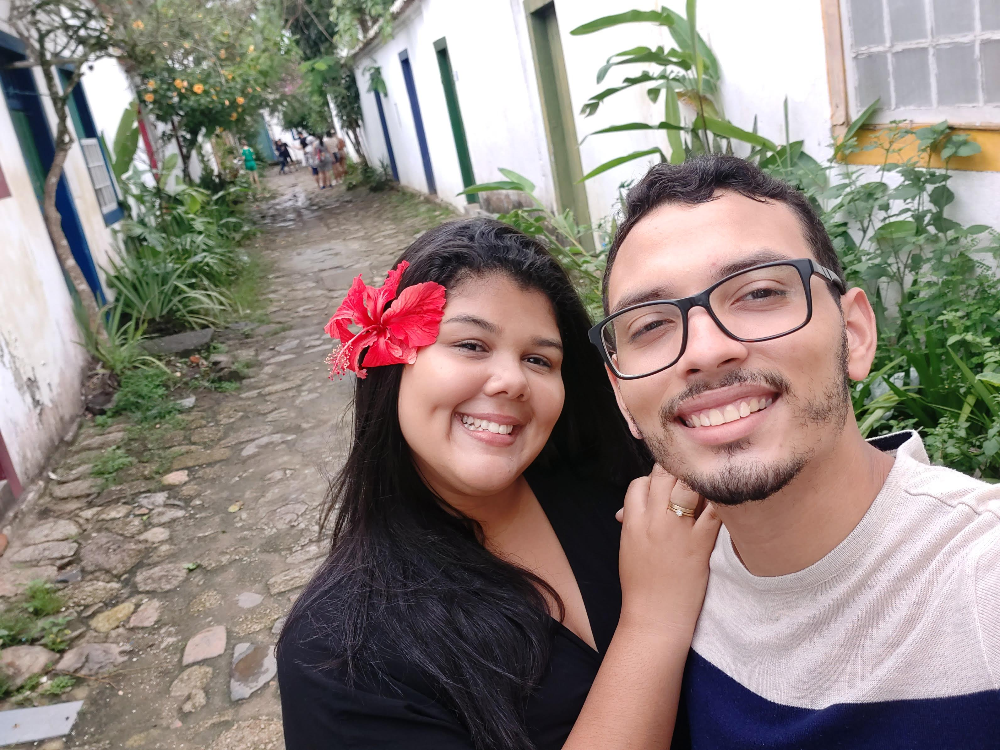

Lua de mel braba .
Nossa lua de mel foi incrivel, nós fomos para Parati, queremos voltar lá o mais cedo possível... Depois de viajar o resto do Brasil todo, claro.
Tiramos essa foto na rua mais bonita de Parati, ficamos sabendo que ali ficavam prostitutas kkkkk mas mesmo assim é lindo.
Aqui ja foi nas cachoeiras de Parati, esse cachoeira ficava no hotel Bromélias, onde nos ficamos.